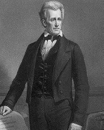

Andrew Carnegie (1835-1919), on dokuzuncu yüzyılın en büyük servetlerinden birini biriktiren, Amerika Birleşik Devletleri’ne gelen İskoçyalı bir göçmendi. Carnegie, dünyadaki en zengin adam olarak emekli oldu ve sonra geri kalan hayatını biriktirdiği paraları dağıtarak geçirdi. Ölümüyle beraber Carnegie, o zamanlar için hiç duyulmamış ölçüde, 350 milyon dolardan fazla parayı hayır kurumlarına bağışladı. Bugün de hâlâ birçok ABD kasabası, göçmen hayırsever tarafından bağışlanan para ile yapılan bir Carnegie Kütüphanesi’ne ev sahipliği yapar.
Carnegie, servetini 19. yüzyıl Amerikası’nın çeliğe olan doymaz iştahına borçludur. 1848’de on üç yaşında ailesi ile İskoçya’dan göç ettikten sonra Carnegie, bir pamuk çırçır fabrikasında çalışmaya başladı. Ama çeliğin muazzam bir fırsat sunduğunu fark etti. 1865’te otuz yaşında, Amerika kıtasını hızlı bir şekilde sanayileştiren, birbirini kesen köprüler ve demiryolları için metal üretmek üzere Pittsburgh’ta Carnegie Çelik Şirketi’ni kurdu. Carnegie, fiyatları düşük tutmakla ün yapmıştı ve şirketi sonunda birçok rakip kazanmıştı.
1901’de Carnegie, şirketi sattı ve emekliye ayrıldı. Mütevazı kökleri ile işçi sınıfının bir yoldaşı olarak kendisinin istediği bir imaja sahipti ve Zenginliğin Kutsal Kitabı isimli kitabında Carnegie, zenginin zenginliğini daha az şeye sahip olana dağıtması gerektiğini savundu. Emekliliğinde de Carnegie aynen bu şekilde yaptı. Bağışları, Amerika Birleşik Devletleri’nde 1.600’den daha fazla ve İngilizce konuşan ülkelerde 2.500 kütüphanenin inşasını finanse etti. Aynı zamanda müzeleri, bilimsel keşif seferlerini ve kendi onuruna adını alan ünlü New York Müzik Salonu’nu da finanse etti.
Amerika Birleşik Devletleri’nde, Carnegie’in sonradan zenginliğe ulaştığı yaşam hikâyesi, herkesin Amerikan rüyasını kovalayabileceği ve zengin olabileceği fikrinin oluşmasına yardım etti. Adı, Amerikan fırsatçılığının ve aynı zamanda zenginliğin sorumluluklarının da bir sembolü olarak kaldı.
EK BİLGİLER:
1. Başka birçok hayır işleri arasında Carnegie, bir kısmı halen kullanımda olan, Amerika Birleşik Devletleri genelinde 7.000’den fazla kilise orgunun kurulumunu karşıladı.
2. Carnegie, servetini kazandıktan sonra sıklıkla İskoçya’ya gitti ve bir yazlık olarak kullanmak üzere İskoçya yaylalarındaki Skibo Kalesi’ni satın aldı. Kale, yıllarca ailesinin mülkiyeti olarak kaldı, ama şimdi seçkin bir tatil merkezidir. Madonna ve Guy Ritchie, 2000’de orada evlendiler.
3. Carnegie, İç Savaş boyunca Birlik’in hararetli bir destekçisiydi. Orduların savaş alanına naklini koordine ederek, askerî demiryollarının ve telgrafların müfettişi olarak hizmet etti.
4. Devasa bir dinozor (diplodocus carnegii), fosilini yeryüzüne ilk çıkaran keşfi finanse eden Carnegie’nin onuruna, onun adını aldı.